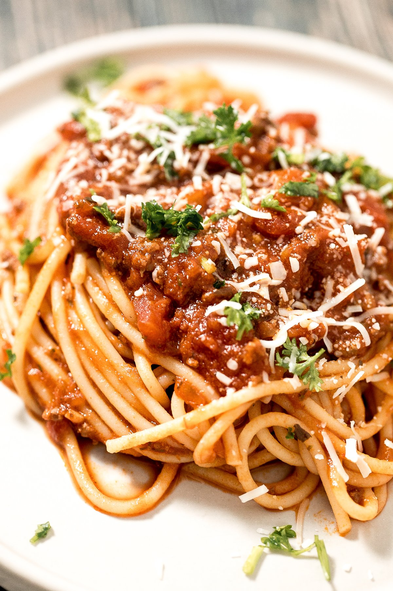

Spaghetti Recipe

Description
Spaghetti is long and cylindrical pasta. It is a staple of Italian food. It is typically eaten with sauce.
This recipe adapted from https://www.bbcgoodfood.com/recipes/best-spaghetti-bolognese-recipe
Ingredients
- 1 tbsp olive oil
- 4 rashers bacon, finely chopped
- 1 onion, finely chopped
- 2 carrots, finely chopped
- 500g beef mince
- 4 tbsp pasta sauce
Steps
- Put saucepan on medium heat and add 1 tbsp olive oil.
- Fry 4 bacon rashers for 10 minutes until golden.
- Add the onion and carrot. Fry and stir for 10 minutes.
- Add 500g beef mince, stirring for 4 minutes until meat is browned.
- Add the 4 tbsp pasta sauce.
- Cook the spaghetti according to the pack.
- Serve spaghetti with pasta.